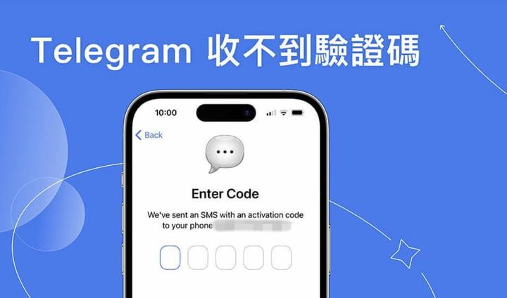
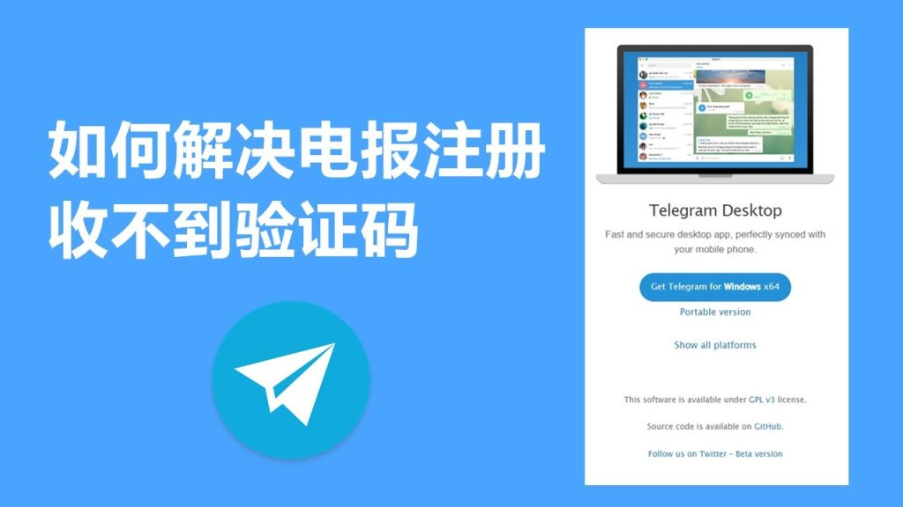
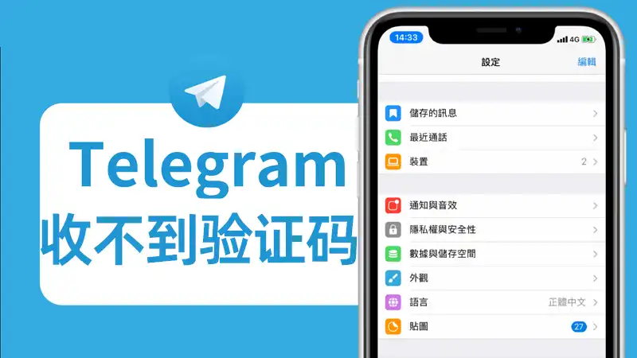

为什么Telegram收不到短信验证？
如果Telegram收不到短信验证，可能是由于以下原因：首先，网络信号不好或运营商的短信服务问题可能导致短信无法送达。其次，如果输入的手机号码错误，Telegram也无法发送验证码。还可能是由于频繁请求验证码导致被暂时屏蔽。建议检查网络连接、确认号码是否正确，并耐心等待，避免频繁请求验证码。如果问题持续，可以尝试选择语音验证或联系Telegram客服解决。

Telegram短信验证失败的常见原因
网络连接不稳定导致无法接收短信
信号不稳定或弱: 当你所在的地区或环境信号较差时，手机可能无法稳定接收到Telegram发送的短信验证码。确保你的设备在一个信号强的区域，最好靠近Wi-Fi或4G/5G网络覆盖良好的地方，这样可以确保短信能顺利送达。
运营商短信问题: 有时，运营商的短信传输服务可能出现延迟或故障，导致验证码无法及时送达。在这种情况下，你可以尝试重启手机或更换网络环境，查看是否能恢复短信的接收。
手机设置影响网络接收: 如果手机的网络设置出现问题，如启用了飞行模式或网络连接不稳定，Telegram可能无法成功发送短信。确保手机的网络连接正常，且没有启用飞行模式，并可以稳定接收短信。
手机号码格式错误或输入不正确
国际区号错误: 在输入手机号码时，务必确保包括正确的国际区号。如果省略或错误输入了区号，Telegram无法正确识别并发送验证码到你的号码。确保电话号码符合国际格式，并根据所在地区输入正确的区号。
号码错误或无效: 如果输入的手机号码存在错误，或该号码无法接收到短信，Telegram会无法发送验证码。请仔细检查号码是否准确，确保其可以接收短信，并且未被运营商阻止或限制。
号码已被注册或封锁: 如果你所使用的电话号码已经注册过其他Telegram账号，或者该号码由于某些原因（如垃圾短信行为）被Telegram封锁，验证短信可能会被拒绝。此时，你可以尝试使用备用号码进行注册或验证，确保没有号码冲突。

解决Telegram无法接收短信的有效方法
如何检查手机设置，确保短信功能正常
检查手机网络连接: 确保手机的网络信号强且稳定。若网络不稳定，可能导致短信接收失败。检查是否处于飞行模式，确保飞行模式已关闭，手机已正确连接到Wi-Fi或移动数据网络。
检查短信设置: 在手机的“设置”中，确保短信功能已启用，并且短信应用没有受到任何限制。确保你的设备能接收来自其他应用或服务的短信，并且短信服务没有被误屏蔽。
检查运营商网络问题: 有时，运营商的短信服务可能会出现延迟或中断，导致无法接收短信验证码。你可以尝试切换到另一个网络或联系运营商，了解是否存在短信服务问题或网络故障。
通过语音验证绕过短信接收问题
选择语音验证: 如果你无法通过短信接收验证码，可以选择使用Telegram提供的语音验证功能。在短信验证失败的界面，选择“通过语音接收验证码”选项，Telegram会拨打你的手机，并将验证码以语音的方式告知你。
确保语音服务正常: 语音验证需要你的手机能够正常接听电话。确保你的设备能够接听来电，且没有任何设置阻止来电（例如，拒接陌生号码）。
适用场景: 如果你所在的地区无法正常接收短信，或运营商的短信服务受限，语音验证是一个很好的替代方法，帮助你顺利完成验证并注册Telegram账户。
使用Telegram时如何避免短信验证失败
确保网络畅通，避免高峰时段
确保信号稳定: 在进行Telegram的短信验证时，确保手机的网络信号稳定。弱信号或不稳定的网络连接可能导致短信无法及时发送或接收。尽量选择信号强的区域，尤其是在使用移动数据时，确保没有干扰信号的因素。
避免高峰时段: 短信服务在高峰时段可能会出现延迟，特别是在使用移动网络时。避免在运营商高流量时段（如节假日或工作日的高峰时段）进行验证，可以减少短信发送失败的几率。
使用稳定的网络连接: 如果可能，使用Wi-Fi连接而非移动数据，这样可以减少由于移动数据网络不稳定而导致的验证失败问题。确保网络连接稳定且没有出现中断。
检查是否被运营商或Telegram屏蔽短信服务
联系运营商确认服务: 如果无法接收到Telegram的验证码，首先要检查你的短信服务是否正常。联系运营商确认是否存在短信服务的限制或中断，有时运营商可能会暂时限制短消息的接收。
确保没有被屏蔽: 如果你的手机号因某些原因（如频繁请求验证码）被Telegram临时封锁，验证码可能无法送达。确保你没有违反Telegram的使用政策，并等待一段时间后重新尝试。
尝试备用号码: 如果你发现你的电话号码确实被屏蔽或无法接收短信验证码，尝试使用备用电话号码进行验证，确保该号码没有与其他Telegram账户关联。

Telegram无法接收短信的其他解决办法
如何通过其他设备接收Telegram验证短信
使用备用设备接收短信: 如果你无法在当前设备上接收到Telegram的短信验证码，可以尝试在其他设备上进行验证。使用相同的电话号码，在另一部手机上尝试接收验证码。只要号码相同，Telegram允许你在不同设备上接收验证短信。
使用虚拟号码或短信转发服务: 有时，你可以通过使用虚拟号码或短信转发服务来接收Telegram的验证码。确保你选择的服务可以接收SMS验证码，并将其转发到你的手机上。使用虚拟号码时，要确保该服务没有被Telegram标记为可疑。
使用固定电话接收语音验证码: 如果短信验证无法完成，可以选择语音验证码选项。在“短信接收失败”页面，选择“通过语音接收验证码”选项，Telegram会打电话到你的固定电话，告知验证码。这种方法适用于无法通过手机接收短信的情况。
修改Telegram应用权限，确保能够接收短信
检查短信权限设置: 在手机的设置中，检查Telegram应用是否有权限接收短信。在安卓设备上，进入“设置”>“应用程序”>“Telegram”>“权限”，确保Telegram有权限接收和读取短信。没有该权限时，Telegram无法接收验证短信。
允许Telegram访问消息功能: 在iOS设备上，进入“设置”>“Telegram”>“允许访问”并确保短信权限已启用。如果权限被禁用，Telegram将无法接收短信。
检查后台应用刷新: 确保Telegram应用可以在后台正常运行。进入手机的“设置”>“应用管理”中找到Telegram，确保“后台应用刷新”开启，这样Telegram能够及时接收和更新短信验证请求。
如果Telegram短信验证频繁失败怎么办？
避免频繁请求验证码，降低被封锁风险
减少验证码请求频率: 频繁请求验证码可能会导致Telegram暂时封锁你的号码。为了避免这种情况，尽量减少多次请求验证码。每次验证失败后，最好等待一段时间再重新尝试，避免Telegram检测到异常活动并封锁号码。
等待验证码的有效期: 每个验证码都有有效期，如果在验证码有效期内未使用，可能会被系统自动作废。尽量在验证码到期前输入正确的验证码，避免浪费时间和增加验证请求次数。
使用正确的号码: 确保你使用的是正确的电话号码，输入时没有任何错误。如果号码错误或格式不正确，也会导致验证码请求失败。在确认无误后再进行验证，避免因重复错误而导致Telegram限制验证码请求。
确认运营商的短信接收设置是否正常
检查短信服务是否正常: 有时，Telegram无法发送验证码是因为运营商的短信服务出现问题。联系运营商，确认短信接收服务是否正常，尤其是当其他短信也无法接收时。运营商的短信服务可能会出现故障或限制，需要与他们确认解决方案。
查看运营商是否限制接收验证码: 某些运营商可能会对短信验证码服务做出限制，特别是对于频繁注册或请求验证码的用户。你可以向运营商咨询是否存在类似限制，并请求解除此类服务限制。
切换运营商或网络: 如果你的运营商频繁出现问题，可以尝试切换到另一个运营商的网络，或使用Wi-Fi网络验证。在某些情况下，网络环境的不同可能会影响短信的传输，从而影响验证码的接收。
Telegram短信验证为什么总是失败？
为什么Telegram短信验证总是延迟？
如何解决Telegram收不到短信验证码？
Telegram中文 其他新闻
Telegram删除的相片还能找回来吗？
在Telegram中，一旦图片被删除，通常无法从应用内恢复。除非你之前已将图片保存到了设备上或使用了云备份服务 […]
为什么手机收不到Telegram的验证码？
手机收不到Telegram的验证码可能是由于几个原因：网络连接问题、短信服务商的延迟或拦截、手机号输入错误、或 […]
Telegram聊天记录删了可以恢复吗？
在Telegram中，一旦聊天记录被删除，通常是无法恢复的。Telegram不提供一个内置的聊天记录恢复功能。 […]

Telegram怎么设置才安全？
要提高Telegram的安全性，用户可以开启“秘密聊天”功能，这会启用端对端加密，确保消息仅在发送者和接收者之 […]